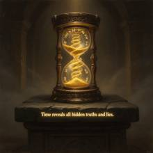
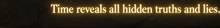
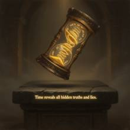

Text Generation — Please generate a painting: an ancient magic hourglass is being turned
Please generate a painting: an ancient magic hourglass is being turned upside down. Due to the passage of time, a line of English words appears on the stone platform below it: "Time reveals all hidden truths and lies."

Judge — Direct
- PASSText Generation — The image correctly generates the text 'Time reveals all hidden truths and lies.' on the stone platform.
- PASSCompound - Imagination — The image depicts an hourglass with a dark, worn wooden frame, conveying an ancient feel. Small, glowing particles of light float around the hourglass, suggesting a magical quality.
- PASSRelationship - Composition — The image shows a line of English words arranged in the foreground on the stone platform.
- FAILLogical Reasoning — The image does not show the hourglass being turned upside down; it is depicted in a static, upright position. The prompt implies a process of words appearing over time, but the image presents a final, static scene where the words are already fully present. The causal link and the action described are not visually represented.
Judge — Continuum
- PASSText Generation — The image correctly generates the English text "Time reveals all hidden truths and lies." without any spelling errors, omissions, or additions.
- PASSCompound - Imagination — The image displays an ornate hourglass that appears ancient in its design. The sand within glows and swirls in a helix pattern, and glowing runes are visible on the glass, which gives it a magical quality.
- PASSRelationship - Composition — The image shows a single line of English words, "Time reveals all hidden truths and lies.", on the surface of a stone platform.
- PASSLogical Reasoning — The image shows an hourglass, the symbol for the passage of time, suspended above a stone platform. On the platform, the line of text is present. The hourglass is shown in a tilted, dynamic pose as if in motion or just turned, and the text below glows, visually linking its appearance to the magical hourglass above it, thus representing the concept of time revealing the words.
What the agent did
Thinking
I need to look into this further. Let me check the details. Let me generate a painting of an ancient magical hourglass being flipped upside down. Below it, on a stone pedestal, a single line of English text is displayed: "Time reveals all hidden truths and lies." Let's start with the generation.
Step 1 — `generate_image`
{
"model": "flux2-dev",
"prompt": "A mystical painterly artwork in the style of a classical oil painting. An ancient ornate hourglass with carved bronze and aged glass, glowing magical runes etched into its frame, captured mid-flip as it is turned upside down, glowing golden sand swirling and streaming between the bulbs in a luminous spiral. The hourglass rests above a weathered dark stone platform / plinth in a dim ancient chamber. Engraved on the flat top surface of the stone platform, a single line of English text in glowing golden serif lettering reads exactly: \"Time reveals all hidden truths and lies.\" The scene is lit by warm magical light, dramatic chiaroscuro, atmospheric mist, deep shadows, rich earthy tones with gold and amber accents, detailed and painterly brushstrokes.",
"width": 1024,
"height": 1024
}Result img_0

Thinking
The image is great. Let me check the text at high resolution and verify whether it exactly reads "Time reveals all hidden truths and lies."
Model
This looks promising. Let me verify the text by zooming into the inscription on the stone platform.
Step 2 — `inspect_region`
{
"image": "img_0",
"roi": [
130,
740,
760,
820
]
}Result img_1

Thinking
The text reads exactly "Time reveals all hidden truths and lies." — capital T, correct spelling, period at the end. The prompt requested the following sentence: "Time reveals all hidden truths and lies." The displayed sentence includes a period, which is fine / consistent. Next, check whether the hourglass is "flipped upside down." Looking at the original image: the hourglass is upright, with sand... actually, in the image the hourglass looks nearly upright. The top bulb has a spiral of sand, and the bottom bulb also has sand. The prompt says the hourglass is being flipped upside down. The current image doesn't show it in the middle of being flipped — it's resting on the pedestal in an upright state. Hmm, but visually the sand spirals downward. Let me look more carefully. In the original image, the hourglass sits upright on its base on the stone pedestal. The sand is in the lower bulb (with a pile of sand at the bottom) and a spiral in the upper part. Actually, it's hard to tell. It doesn't look like it's mid-flip. User's description: "An ancient magical hourglass is being flipped upside down. Due to the passage of time, a line of English text appears on the stone pedestal below." So the key elements are: an hourglass mid-flip, a magical atmosphere, the text on the stone pedestal. The text is perfect. The flip is not clearly depicted. I should edit the image so that the hourglass is tilted / in the middle of being flipped. Let me try an edit_image on img_0 and make it so the hourglass is tilted about 90–120 degrees, caught mid-flip, with sand swirling around. No, wait — let me look at the image once more. The top bulb has a glowing spiral, and the bottom bulb has a spiral and sand at the bottom. The hourglass's axis is vertical, sitting on its base. It's not mid-flip. Let me edit: "Tilt the hourglass so it's mid-flip, rotating about 120 degrees off vertical, caught in the middle of being flipped, with the sand swirling in a glowing spiral." However, this risks disturbing the text and the overall composition. I should instruct it to preserve the text, the pedestal, and the background. Let me try edit_image on img_0 with references specified... references are meant to lock in visual aspects. I can pass img_0 as the image to be edited and write the prompt focused on the flip. Let me try it.
Model
The inscription is exactly as requested. However, the hourglass is displayed upright rather than being flipped mid-flip. Let me fix this in an edit.
Step 3 — `edit_image`
{
"image": "img_0",
"model": "flux2-dev",
"prompt": "Tilt the ancient hourglass so it is caught mid-flip, rotated roughly 135 degrees off vertical as if someone is turning it upside down, floating slightly above its base with the glowing golden sand swirling in a luminous spiral. Keep everything else identical: the engraved golden text \"Time reveals all hidden truths and lies.\" on the stone platform must remain unchanged, as must the painterly background, lighting, and composition."
}Result img_2

Thinking
Now, the hourglass is being flipped in the middle of the action, tilting above the stone pedestal, and the text remains as is. Let me check whether the text in img_2 has been preserved accurately.
Model
The hourglass is now clearly mid-flip. Let me verify the text survived the edit intact.
Step 4 — `inspect_region`
{
"image": "img_2",
"roi": [
130,
740,
760,
820
]
}Result img_3
Thinking
The text is perfect: "Time reveals all hidden truths and lies." with the correct capitalization and spelling. The hourglass is in the middle of flipping, and the magical glow, the runes, and the golden swirling sand are there. The stone platform is below it. All the elements are in place. Let's mark img_2 as the best and finish up.
Model
Everything checks out: - **Hourglass mid-flip** — the ancient ornate hourglass is tilted roughly 135°, caught mid-turn with glowing golden sand swirling in a spiral and magical runes on the glass. - **Stone platform with inscription** — the engraved, glowing golden text reads exactly: "Time reveals all hidden truths and lies." (verified at source resolution, letter by letter). - **Mystical painterly style** — warm chiaroscuro lighting, ancient chamber, atmospheric mist, oil-painting brushwork.
Step 5 — `mark_best`
{
"image": "img_2",
"reason": "Final result: hourglass clearly caught mid-flip with swirling golden sand and runes, and the inscription \"Time reveals all hidden truths and lies.\" verified correct at source resolution on the stone platform."
}Thinking
Done. The marked image is img_2, and this is the final version. Let me summarize for the user.
Model
The painting is complete. Here's what the final result shows: - **The flip**: An ancient, ornately carved bronze hourglass caught mid-flip, tilted dramatically above the stone platform, with magical runes etched into its glass and glowing golden sand swirling in a luminous spiral. - **The inscription**: Engraved on the stone platform below, in glowing golden serif lettering: **"Time reveals all hidden truths and lies."** — I zoomed in and verified every letter matches exactly, including capitalization. - **The mood**: Classical oil-painting style with warm magical light, chiaroscuro shadowing, and atmospheric mist in an ancient chamber. I marked the final image (img_2) as the best result, so that's the one that gets returned.